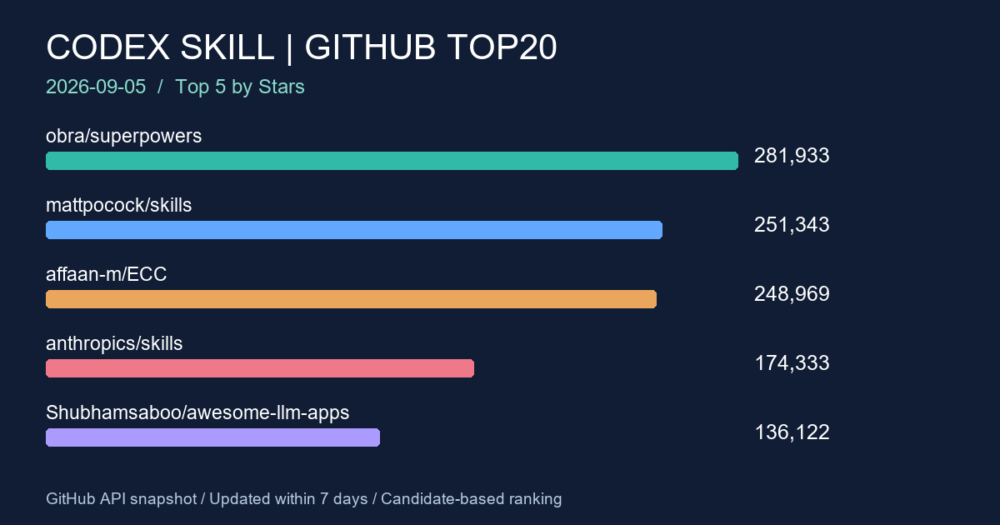

2026-09-05 · GitHub · Codex Skill
GitHub Codex Skill 熱門專案 TOP20
2026-09-05 週報：Anysearch 搜尋搭配 GitHub API 核實近七天更新的技能與代理專案，依 Stars 排序列出 20 項。

前言
技能生態涵蓋工程流程、設計、研究與記憶管理。本週從可驗證候選中整理 20 個活躍專案；榜單是探索入口，Stars 代表累積關注度，不能用來直接判定企業導入品質。
搜尋條件
- 整理日期：2026-09-05。資料擷取起點：2026-09-05T19:03:51+08:00。
- 更新時間窗口：2026-08-29T11:03:51+00:00 至 2026-09-05T11:03:51+00:00；採 GitHub pushed_at，表格日期為 UTC，完整時間保留於 time 標籤。
- Anysearch 使用 week 篩選，關鍵字涵蓋 Codex Skill、Codex Skills、OpenAI Codex Skill、Agent Skill、Codex agents、Codex plugin、Codex automation；code 分類端點不可用，改用一般搜尋。
- 以搜尋結果、上期候選與 GitHub repository search 補充名單，再逐一讀取官方 API。GitHub 補充搜尋為 agent skills、codex skill、codex plugin，依 Stars 排序每組取前 20。
- 依原始 description 或 topics 確認技能／Codex 代理工具關聯，排除關聯不明確、封存、時間不符與核實失敗的項目；依 stargazers_count 由高至低取 20。
- 語言保留 GitHub 原始值，空值標示未標示；繁體中文只用於文章敘述，不是 repository 語言條件。原始描述保留原文。
本次檢查 62 個候選，4 個 API 請求回傳 403，未列入。搜尋引擎涵蓋率及 API 限制可能影響入選；這是本次候選集合內的 TOP20，並非全 GitHub 完整排名。Agent Skill 類別也包含非 Codex 專屬專案。
TOP20 排名表
手機可左右捲動表格。原始描述中的數量、效果與排名宣稱均屬專案作者自述。
| 排名 | 專案 | Stars | Forks | 語言 | 最近 Push | 原始描述 | 功能簡介 |
|---|---|---|---|---|---|---|---|
| 1 | obra/superpowers API 資料 | 281,933 | 25,251 | Shell | An agentic skills framework & software development methodology that works. | 將可組合技能與軟體開發方法整合成框架。 | |
| 2 | mattpocock/skills API 資料 | 251,343 | 21,232 | Shell | Skills for Real Engineers. Straight from my .agents directory. | 提供工程實務使用的代理技能集合。 | |
| 3 | affaan-m/ECC API 資料 | 248,969 | 37,524 | JavaScript | The agent harness performance optimization system. Skills, instincts, memory, security, and research-first development for Claude Code, Codex, Opencode, Cursor and beyond. | 整合技能、記憶、安全與研究流程的代理工作環境。 | |
| 4 | anthropics/skills API 資料 | 174,333 | 20,647 | Python | Public repository for Agent Skills | 公開的 Agent Skills 技能儲存庫。 | |
| 5 | Shubhamsaboo/awesome-llm-apps API 資料 | 136,122 | 20,010 | Python | 100+ AI Agents, Agent Skills and RAG Apps - Free and Open Source. | 收錄 AI 代理、Agent Skills 與 RAG 應用範例。 | |
| 6 | nextlevelbuilder/ui-ux-pro-max-skill API 資料 | 125,130 | 13,400 | Python | An AI skill that provides design intelligence for building professional UI/UX across multiple platforms. | 提供跨平台 UI/UX 設計技能；topics 包含 Codex。 | |
| 7 | Graphify-Labs/graphify API 資料 | 114,881 | 11,148 | Python | Turn any codebase, with its docs, SQL schemas, configs, and PDFs, into a queryable knowledge graph. A /graphify skill for Claude Code, Cursor, Codex, and Gemini CLI: local deterministic AST parsing, every edge explained, no vector store. | 將程式碼與文件轉成可查詢知識圖譜的技能。 | |
| 8 | JuliusBrussee/caveman API 資料 | 103,724 | 6,008 | Go | 🪨 why use many token when few token do trick — Claude Code skill that cuts 65% of tokens by talking like caveman | 透過精簡語句降低輸出用量的技能；節省比例為作者宣稱，未獨立實測。 | |
| 9 | nexu-io/open-design API 資料 | 94,185 | 10,865 | TypeScript | 🎨 Best DeepSeek Harness Design Plugin. The open-source Claude Design alternative. 🖥️ Local-first desktop app. 🖼️ Your coding agent becomes the design engine: prototypes, landing pages, dashboards, slides, images & video — real files, HTML/PDF/PPTX/MP4 export. 🤖 Claude Code / Codex / Cursor / DeepSeek Harness / OpenCode & 20+ CLIs via BYOK. | 讓程式代理產出設計與多媒體檔案的本機應用，描述列有 Codex。 | |
| 10 | thedotmack/claude-mem API 資料 | 93,248 | 8,192 | JavaScript | Persistent Context Across Sessions for Every Agent – Captures everything your agent does during sessions, compresses it with AI, and injects relevant context back into future sessions. Works with Claude Code, OpenClaw, Codex, Gemini, Hermes, Copilot, OpenCode + More | 將代理工作摘要保留到後續工作階段的記憶工具，描述列有 Codex。 | |
| 11 | addyosmani/agent-skills API 資料 | 92,348 | 9,838 | JavaScript | Production-grade engineering skills for AI coding agents. | 面向正式工程開發的代理技能集合。 | |
| 12 | bytedance/deer-flow API 資料 | 81,384 | 11,229 | Python | An open-source long-horizon SuperAgent harness that researches, codes, and creates. With the help of sandboxes, memories, tools, skill, subagents and message gateway, it handles different levels of tasks that could take minutes to hours. | 結合沙箱、記憶、工具與技能的長任務代理框架。 | |
| 13 | mvanhorn/last30days-skill API 資料 | 61,281 | 5,353 | Python | AI agent skill that researches any topic across Reddit, X, YouTube, HN, Polymarket, and the web - then synthesizes a grounded summary | 從多個公開平台研究主題並整理摘要的技能。 | |
| 14 | tt-a1i/archify API 資料 | 48,716 | 3,153 | JavaScript | Agent skill for beautiful, verifiable architecture, workflow, sequence, data-flow, and lifecycle diagrams—self-contained HTML with motion and crisp export. | 產生架構、流程與序列圖等 HTML 圖表的技能。 | |
| 15 | coreyhaines31/marketingskills API 資料 | 46,940 | 7,317 | JavaScript | Marketing skills for Claude Code and AI agents. CRO, copywriting, SEO, analytics, and growth engineering. | 涵蓋文案、SEO、分析與成長工程的行銷技能。 | |
| 16 | sickn33/agentic-awesome-skills API 資料 | 46,004 | 6,723 | Python | AAS Core is the local, agent-first control plane for complete catalog discovery, agent-owned selection, stack validation, and planning, backed by 2,100+ agentic skills. Includes CLI, local MCP, catalog, plugins, and Workbench. | 結合技能目錄、選用、驗證、規劃與工作台的工具。 | |
| 17 | K-Dense-AI/scientific-agent-skills API 資料 | 42,787 | 3,914 | Python | Turn any AI agent into an AI Scientist. The #1 Agent Skills library for science, used by 190,000+ scientists worldwide. 165 ready-to-use validated skills plus 100+ scientific databases covering biology, chemistry, medicine, and drug discovery. Compatible with Cursor, Claude Code, Codex, Pi, Antigravity, and the open Agent Skills standard. | 面向科學研究的技能庫；使用量與驗證敘述為作者自述。 | |
| 18 | github/awesome-copilot API 資料 | 38,657 | 4,889 | JavaScript | Community-contributed instructions, agents, skills, and configurations to help you make the most of GitHub Copilot. | GitHub Copilot 的社群指令、代理與技能集合。 | |
| 19 | VoltAgent/awesome-agent-skills API 資料 | 33,772 | 3,572 | 未標示 | A curated collection of 1000+ agent skills from official dev teams and the community, compatible with Claude Code, Codex, Gemini CLI, Cursor, and more. | 彙整官方與社群技能的索引，描述列有 Codex 相容性。 | |
| 20 | mukul975/Anthropic-Cybersecurity-Skills API 資料 | 32,199 | 3,884 | Python | 817 structured cybersecurity skills for AI agents · Mapped to 6 frameworks: MITRE ATT&CK, NIST CSF 2.0, MITRE ATLAS, D3FEND, NIST AI RMF & MITRE F3 (Fight Fraud) · agentskills.io standard · Works with Claude Code, GitHub Copilot, Codex CLI, Cursor, Gemini CLI & 20+ platforms · 29 security domains · Apache 2.0 | 供 AI 代理使用的資安技能庫，描述列有 Codex CLI。 |
觀察重點
- 工程方法與技能集合佔據前三名，顯示此候選集合的累積關注度集中於開發流程。
- 設計、知識圖譜、圖表與研究技能同時入榜，應依具體輸入／輸出選用，避免一次安裝大量重疊技能。
- 記憶工具與長任務框架也在榜內，評估時應分別檢查資料儲存方式與工具執行權限。
MIS／技術人員注意項目
- 企業試用先檢視 SKILL.md、附帶腳本、授權與外部連線，再固定版本於測試環境執行。
- OA／PROD 分開評估：確認依賴是否可離線取得、代理是否會上傳程式碼，以及服務帳號可用權限。
- 資安技能庫可作為工作清單參考，但不能取代正式稽核；記憶工具尤其要確認保存位置、保留期限與敏感資料排除。
- Windows 團隊可另外查看 dotnet/skills；本次 API 顯示 5,361 Stars、2026-09-05 push，因 Stars 未達前 20 而未列榜。
本週變化簡述
對照本機 2026-08-29 草稿快照（上期尚未確認發佈），obra/superpowers 由 279,205 增至 281,933 Stars（+2,728）；mattpocock/skills 由 240,573 增至 251,343（+10,770），超過 ECC 本次的 248,969。ECC 由 244,058 增加 4,911。
anthropics/skills 本次 push 為 2026-09-03，重新符合時間窗口。新增候選與搜尋範圍差異也會影響名次，不能把新入榜一律解讀成本週爆紅；未入榜也不代表專案停止維護。
結語
先挑一個可衡量的工作流程試用，再評估技能帶來的時間節省與維護成本。排名有助於發現專案，實際導入仍應以權限、依賴與可重現結果為依據。
資料來源與時間提醒
來源：Anysearch 搜尋結果與各列 GitHub Repository／官方 API；可從 codex-skills 主題頁延伸探索。API 欄位快照另存為 本次資料快照。
Stars、Forks 與最近 Push 時間會隨 GitHub 即時變動，此頁保留本次整理結果。